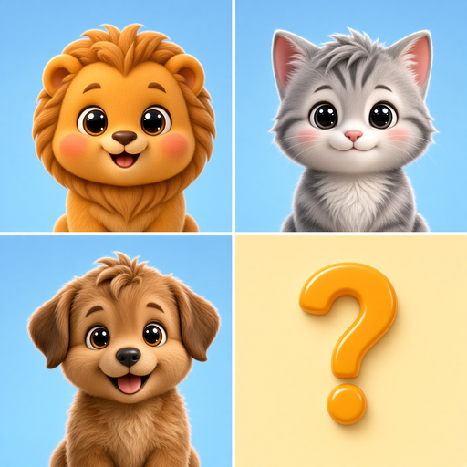
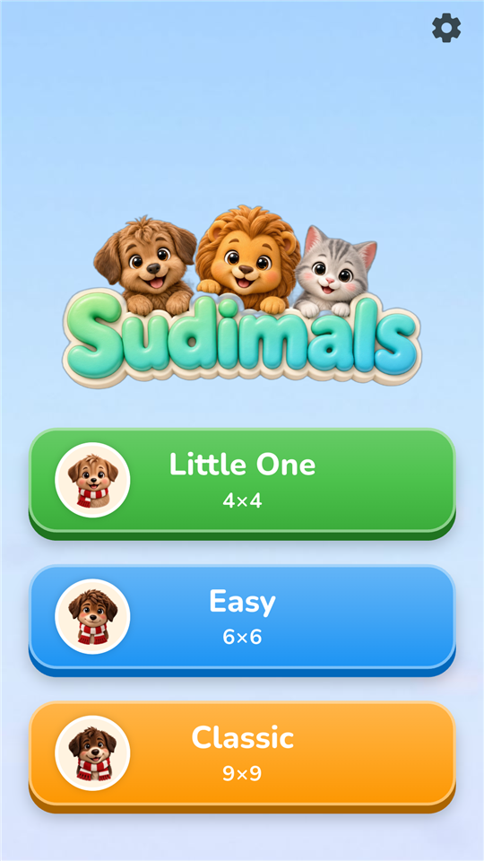
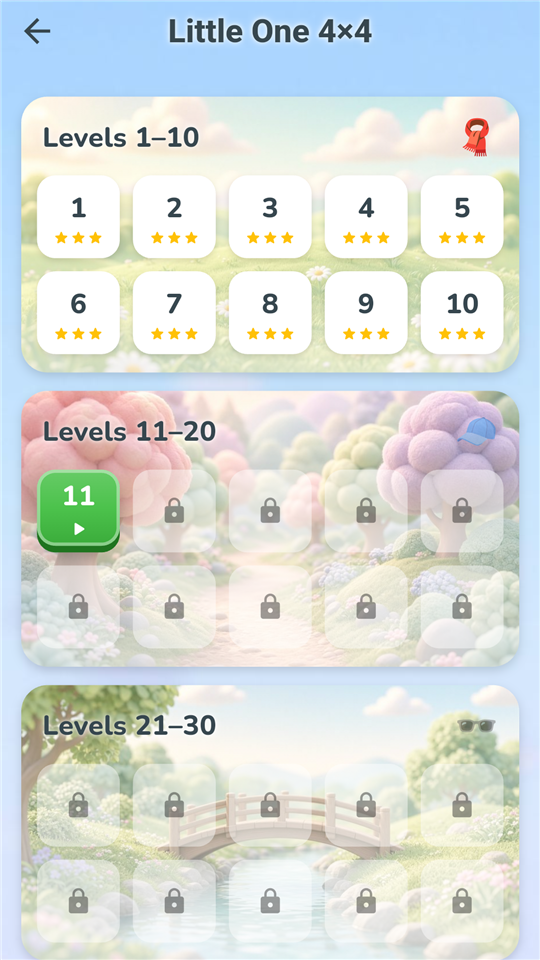
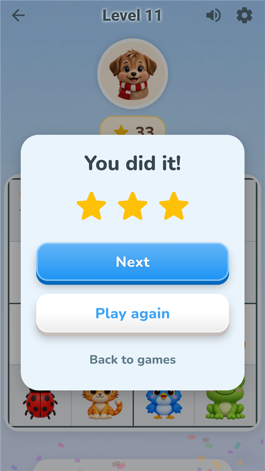

Sudimals
Real sudoku for kids aged 4 to 10. Cute animals instead of numbers. Справжнє судоку для дітей від 4 до 10 років. Замість цифр — тваринки. Echtes Sudoku für Kinder von 4 bis 10. Tiere statt Zahlen. Un vrai sudoku pour les enfants de 4 à 10 ans. Des animaux à la place des chiffres. Sudoku real para niños de 4 a 10 años. Animales en vez de números. Sudoku de verdade para crianças de 4 a 10 anos. Animais no lugar dos números. Prawdziwe sudoku dla dzieci od 4 do 10 lat. Zwierzątka zamiast cyfr.



For parents
- No ads at all. Not a single banner or video.
- No data collection. No accounts, no trackers, no internet needed. The game works fully offline.
- You cannot lose. A wrong animal simply bounces back. No red crosses, no timers, no pressure.
- One purchase, forever. The first 11 levels of each game are free. The full version is a single purchase behind a parental gate, so a child never reaches the store.
- Grows with your child. 4×4 for ages 4–5, 6×6 for 6–7, the classic 9×9 for 8–10.
Для батьків
- Жодної реклами. Ні банерів, ні відео.
- Жодного збору даних. Без акаунтів, без трекерів, без інтернету. Гра працює повністю офлайн.
- Не можна програти. Неправильна тваринка м'яко пружинить назад. Без червоних хрестиків, таймерів і тиску.
- Одна покупка назавжди. Перші 11 рівнів кожної гри безкоштовні. Повна версія — одна разова покупка за батьківським шлюзом, дитина в магазин не потрапить.
- Росте разом із дитиною. 4×4 для 4–5 років, 6×6 для 6–7, класичне 9×9 для 8–10.
Für Eltern
- Keine Werbung. Kein einziges Banner, kein Video.
- Keine Datensammlung. Keine Konten, keine Tracker, kein Internet nötig. Das Spiel funktioniert komplett offline.
- Man kann nicht verlieren. Ein falsches Tier springt einfach zurück. Keine roten Kreuze, keine Timer, kein Druck.
- Ein Kauf, für immer. Die ersten 11 Level jedes Spiels sind kostenlos. Die Vollversion ist ein einmaliger Kauf hinter einer Elternsperre – ein Kind gelangt nie in den Store.
- Wächst mit dem Kind. 4×4 für 4–5 Jahre, 6×6 für 6–7, das klassische 9×9 für 8–10.
Pour les parents
- Aucune publicité. Pas une seule bannière, pas de vidéo.
- Aucune collecte de données. Pas de compte, pas de traceur, pas besoin d'Internet. Le jeu fonctionne entièrement hors ligne.
- Impossible de perdre. Un animal mal placé revient simplement à sa place. Pas de croix rouges, pas de chrono, pas de pression.
- Un seul achat, pour toujours. Les 11 premiers niveaux de chaque jeu sont gratuits. La version complète est un achat unique derrière un contrôle parental : l'enfant n'accède jamais à la boutique.
- Grandit avec l'enfant. 4×4 pour 4–5 ans, 6×6 pour 6–7 ans, le classique 9×9 pour 8–10 ans.
Para padres
- Sin anuncios. Ni un solo banner ni vídeo.
- Sin recopilación de datos. Sin cuentas, sin rastreadores, sin necesidad de Internet. El juego funciona totalmente sin conexión.
- No se puede perder. Un animal equivocado simplemente vuelve a su sitio. Sin cruces rojas, sin cronómetro, sin presión.
- Una compra, para siempre. Los primeros 11 niveles de cada juego son gratis. La versión completa es una única compra tras un control parental: el niño nunca llega a la tienda.
- Crece con el niño. 4×4 para 4–5 años, 6×6 para 6–7, el clásico 9×9 para 8–10.
Para os pais
- Sem anúncios. Nenhum banner, nenhum vídeo.
- Sem coleta de dados. Sem contas, sem rastreadores, sem precisar de internet. O jogo funciona totalmente offline.
- Não dá para perder. Um animal errado simplesmente volta ao lugar. Sem X vermelho, sem cronômetro, sem pressão.
- Uma compra, para sempre. As 11 primeiras fases de cada jogo são grátis. A versão completa é uma compra única atrás de um bloqueio para pais: a criança nunca chega à loja.
- Cresce com a criança. 4×4 para 4–5 anos, 6×6 para 6–7, o clássico 9×9 para 8–10.
Dla rodziców
- Bez reklam. Ani jednego banera, ani wideo.
- Bez zbierania danych. Bez kont, bez trackerów, bez internetu. Gra działa w pełni offline.
- Nie da się przegrać. Złe zwierzątko po prostu wraca na miejsce. Bez czerwonych krzyżyków, bez timera, bez presji.
- Jeden zakup na zawsze. Pierwsze 11 poziomów każdej gry jest darmowe. Pełna wersja to jednorazowy zakup za blokadą rodzicielską: dziecko nigdy nie trafi do sklepu.
- Rośnie razem z dzieckiem. 4×4 dla 4–5 lat, 6×6 dla 6–7, klasyczne 9×9 dla 8–10.
What's insideЩо всерединіWas drin istCe qu'il y a dedansQué incluyeO que tem dentroCo jest w środku
About the studio
Sudimals is made by Manalu Apps, a tiny Ukrainian studio based in Germany. We wanted a first sudoku for our own kids: real logic, no ads, no trackers, no fine print. That is the whole game.
Про студію
Sudimals робить Manalu Apps, маленька українська студія в Німеччині. Ми хотіли перше судоку для власних дітей: справжня логіка, без реклами, без трекерів, без дрібного тексту. Це і є вся гра.
Über das Studio
Sudimals kommt von Manalu Apps, einem winzigen ukrainischen Studio in Deutschland. Wir wollten ein erstes Sudoku für unsere eigenen Kinder: echte Logik, keine Werbung, keine Tracker, kein Kleingedrucktes. Das ist das ganze Spiel.
À propos du studio
Sudimals est créé par Manalu Apps, un tout petit studio ukrainien installé en Allemagne. Nous voulions un premier sudoku pour nos propres enfants : de la vraie logique, sans pub, sans traceurs, sans petites lignes. C'est tout le jeu.
Sobre el estudio
Sudimals lo hace Manalu Apps, un pequeño estudio ucraniano con sede en Alemania. Queríamos un primer sudoku para nuestros propios hijos: lógica de verdad, sin anuncios, sin rastreadores, sin letra pequeña. Eso es todo el juego.
Sobre o estúdio
Sudimals é feito pela Manalu Apps, um pequeno estúdio ucraniano na Alemanha. Queríamos um primeiro sudoku para nossos próprios filhos: lógica de verdade, sem anúncios, sem rastreadores, sem letras miúdas. É isso que é o jogo.
O studiu
Sudimals tworzy Manalu Apps, malutkie ukraińskie studio z siedzibą w Niemczech. Chcieliśmy pierwszego sudoku dla własnych dzieci: prawdziwa logika, bez reklam, bez trackerów, bez drobnego druku. To cała gra.
Press & teachers
Reviewers, teachers and kindergartens: write to us and we will send a promo code for the full version, screenshots in 7 languages and the icon. No conditions attached.
Пресі та вчителям
Оглядачам, вчителям і садочкам: напишіть нам, і ми надішлемо промокод на повну версію, скріншоти 7 мовами та іконку. Без жодних умов.
Presse & Lehrkräfte
Rezensenten, Lehrkräfte und Kitas: Schreiben Sie uns, und wir schicken einen Promo-Code für die Vollversion, Screenshots in 7 Sprachen und das Icon. Ohne Bedingungen.
Presse & enseignants
Testeurs, enseignants et écoles maternelles : écrivez-nous, nous vous enverrons un code promo pour la version complète, des captures d'écran en 7 langues et l'icône. Sans aucune condition.
Prensa y docentes
Reseñadores, docentes y escuelas infantiles: escríbannos y les enviaremos un código promocional para la versión completa, capturas en 7 idiomas y el icono. Sin condiciones.
Imprensa e professores
Avaliadores, professores e creches: escrevam para nós e enviaremos um código promocional da versão completa, capturas de tela em 7 idiomas e o ícone. Sem condições.
Prasa i nauczyciele
Recenzenci, nauczyciele i przedszkola: napiszcie do nas, a wyślemy kod promocyjny na pełną wersję, zrzuty ekranu w 7 językach i ikonę. Bez żadnych warunków.